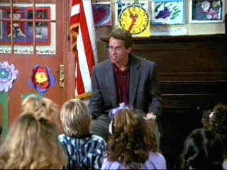

|
Kindergarten Cop/B+,B+ |
|
Universal/1990/111m/FS 1.33 |
Making an successful action
movie and comedy at the same time is traveling over tough terrain, but director
Ivan Reitman makes all the bumps seem smooth. Arnold Schwarzenegger is a cop impersonating
a kindergarten teacher in order to find the estranged wife of a drug dealer. Between her
charming son and herself, the cop is easy prey to love. Penelope Ann Miller matches with
Arnold well and the ensuing romance evolves naturally.
Most of the fun develops in the classroom, where Arnold is
outnumbered and at first numbed by the kids. Before long he's got it under control and
it's even funnier. Though there are some nasty drug related scenes and some violence, this
is still a pretty good flick to watch with the kids.
 |
Arnold's biggest challenge.©Universal |
Though presented in 1.33 open matte format, I did not find the compositions cramped or cropped. The image is very sharp without feeling artificially enhanced. Still, the director's intention was a 1.85 composition . thus, the 1.33 compromises the DVD. Kindergarten Cop is an appropriately colorful movie and the transfer reflects the high key color palette.

Preston Sturges was Hollywood's resident comic genius for more than a decade. His movies are timeless. Click on his image to read all about it.
Check out the Movie Poster Archive for short bios and images of Susan Hayward, Kirk Douglas, Katharine Hepburn and many more. This month's featured star is Clark Gable.
]Imaging
Science Foundation
The Imaging Science
Foundation promotes proper standards in home theater viewing.
ISF trained technicians offer monitor calibration services to
consumers. The difference in a properly calibrated monitor
can be astounding. Click on the image to find an ISF member near
you.
HOT
LINKS
DVD
Verdict
They may be
judgmental, but that's the point, isn't it. Lots of DVD reviews
plus news and more
The
Home Theater Forum
Looking for lively and
helpful exchanges on home theater, DVD, movies. Visit this
friendly site and get a hardy welcome.
Home
Theater Reference Reviewing System

When you read a DVD review it's of utmost importance to know
what equipment is being used to evaluate quality. Click on the
projector to find out more.